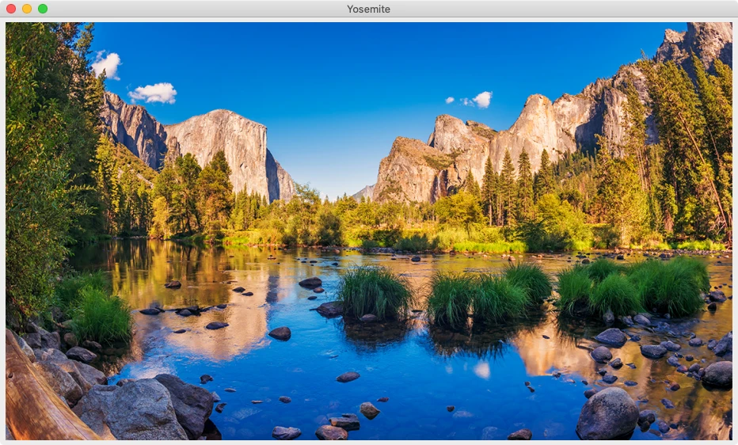

First of its kind GMO-free image decoding library
SAIL is a format-agnostic image decoding library supporting all popular image formats. Being one of the fastest among competitors, it provides simple yet powerful C/C++ API for end-users. SAIL works on Windows, macOS, and Linux platforms.



Features Overview
- Support of all popular image formats including JPEG, PNG, TIFF, GIF, AVIF, and WEBP.
- Thread-safe implementation. SAIL is known to be successfully used in multi-threaded servers.
- Comprehensive APIs covering all possible use-cases:
junior,advanced,deep diver, andtechnical diver. - Pluggable codecs.
- Load from everywhere. Files, memory, and custom I/O sources are supported.
- Codec-specific tuning options like PNG filters. See formats.
- Step-by-step loading of multi-paged or animated images.
- Meta data support: text comments, EXIF, ICC profiles.
- Probing or access to the image properties without decoding pixels.
- Written in C11 and C++11.
Examples
Junior API demonstration
struct sail_image *image;
SAIL_TRY(sail_load_from_file(path, &image));
printf("Size: %ux%u, bytes per line: %u, "
"pixel format: %s\n",
image->width,
image->height,
image->bytes_per_line,
sail_pixel_format_to_string(image->pixel_format));
sail_destroy_image(image);sail::image image(path);
std::cout
<< "Size: "
<< image.width() << 'x' << image.height()
<< ", bytes per line: "
<< image.bytes_per_line()
<< ", pixel format: "
<< image.pixel_format()
<< std::endl;Advanced API demonstration
void *state = NULL;
SAIL_TRY_OR_CLEANUP(sail_start_loading_from_file(path, NULL, &state),
/* cleanup */ sail_stop_loading(state));
struct sail_image *image;
int frame = 0;
for (sail_status_t status = sail_load_next_frame(state, &image);
status == SAIL_OK;
status = sail_load_next_frame(state, &image)) {
printf("Frame #%d, "
"size: %ux%u, bytes per line: %u, "
"pixel format: %s\n",
frame++,
image->width,
image->height,
image->bytes_per_line,
sail_pixel_format_to_string(image->pixel_format));
sail_destroy_image(image);
}
SAIL_TRY(sail_stop_loading(state));sail::image_input image_input(path);
int frame = 0;
for (sail::image image = image_input.next_frame();
image.is_valid();
image = image_input.next_frame()) {
std::cout
<< "Frame #"
<< frame++
<< ", size: "
<< image.width() << 'x' << image.height()
<< ", bytes per line: "
<< image.bytes_per_line()
<< ", pixel format: "
<< image.pixel_format()
<< std::endl;
}Installation
Copyright & License
Released under the MIT license.
Copyright (c) 2020-2025 Dmitry Baryshev
The MIT License
Permission is hereby granted, free of charge, to any person obtaining a copy
of this software and associated documentation files (the "Software"), to deal
in the Software without restriction, including without limitation the rights
to use, copy, modify, merge, publish, distribute, sublicense, and/or sell
copies of the Software, and to permit persons to whom the Software is
furnished to do so, subject to the following conditions:
The above copyright notice and this permission notice shall be included in all
copies or substantial portions of the Software.
THE SOFTWARE IS PROVIDED "AS IS", WITHOUT WARRANTY OF ANY KIND, EXPRESS OR
IMPLIED, INCLUDING BUT NOT LIMITED TO THE WARRANTIES OF MERCHANTABILITY,
FITNESS FOR A PARTICULAR PURPOSE AND NONINFRINGEMENT. IN NO EVENT SHALL THE
AUTHORS OR COPYRIGHT HOLDERS BE LIABLE FOR ANY CLAIM, DAMAGES OR OTHER
LIABILITY, WHETHER IN AN ACTION OF CONTRACT, TORT OR OTHERWISE, ARISING FROM,
OUT OF OR IN CONNECTION WITH THE SOFTWARE OR THE USE OR OTHER DEALINGS IN THE
SOFTWARE.Dzmitry Baryshau